Saúde e segurança
Psicossocial
Campanhas, coleta anônima, índice de risco e planos de ação NR-01 — do diagnóstico à ação.
PHPGoogle Charts
Dashboards, integrações, fluxos operacionais, assinatura eletrônica e redesign de interfaces que desenvolvi para um sistema corporativo usado todos os dias. Cada case mostra o contexto, a solução, as telas e as decisões técnicas.
Mostrando 19 de 19 projetos
Campanhas, coleta anônima, índice de risco e planos de ação NR-01 — do diagnóstico à ação.

Abertura de solicitações, chat por chamado e painel analítico com filtros por perfil.

Envio, triagem e análise de atestados médicos com chat contextual e painel estatístico.

Planejado vs. realizado com drill-down por filial, centro de custo e cargo.

Planejamento mensal por turno com edição direto na grade e totais em tempo real.
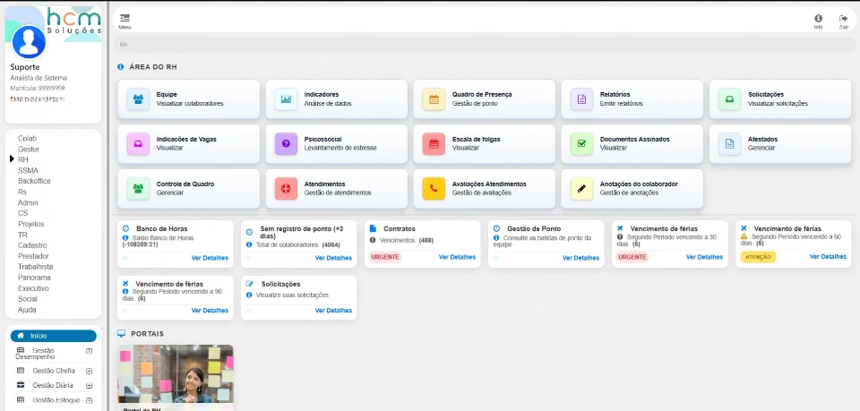
Indicadores operacionais e financeiros, drill-down em modais e busca avançada de colaboradores.
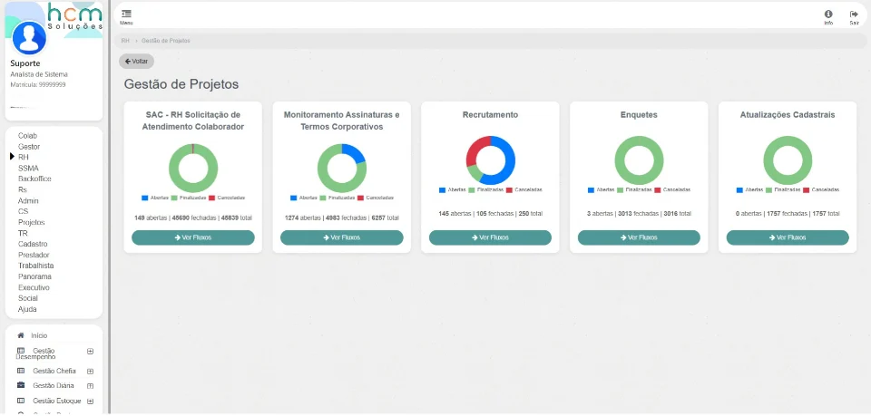
Painel hierárquico com drill-down de projeto para fluxo e fase, para achar gargalos.
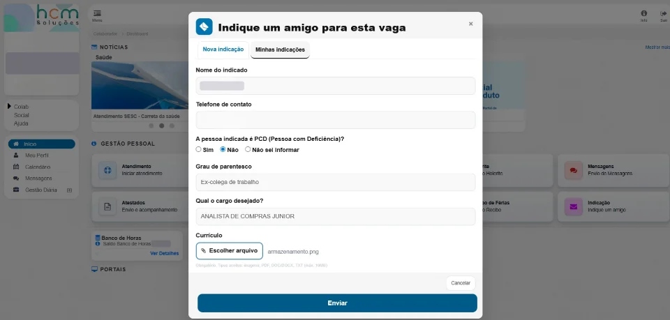
Portal para o colaborador indicar candidatos e painel do RH com edição inline e exportação.
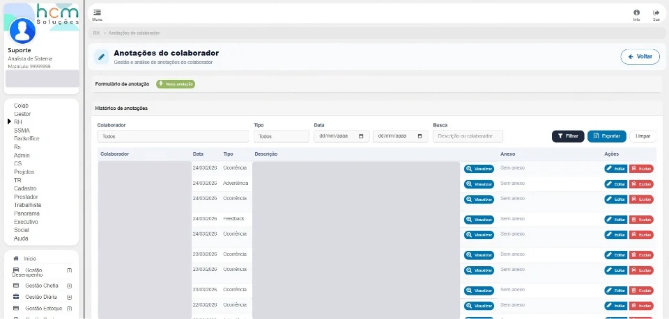
Registro formal de ocorrências, feedbacks e advertências com histórico auditável.
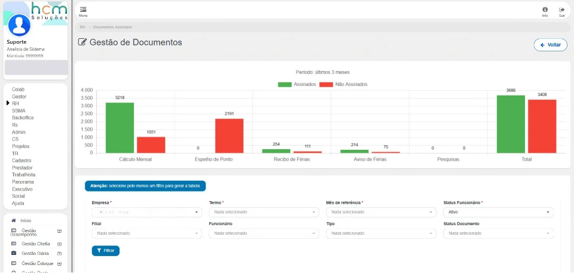
Monitoramento de assinados e pendentes por categoria, com filtros multicritério.
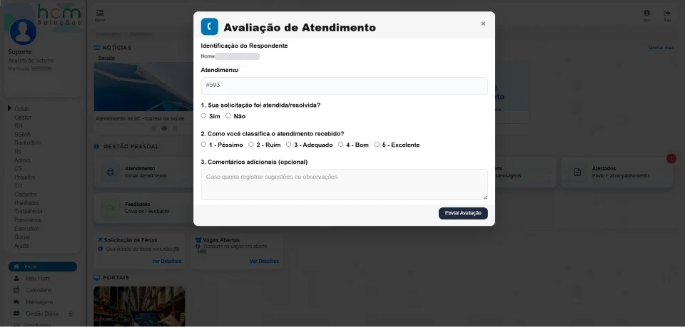
Pesquisa de satisfação após cada atendimento e painel gerencial da qualidade do suporte.
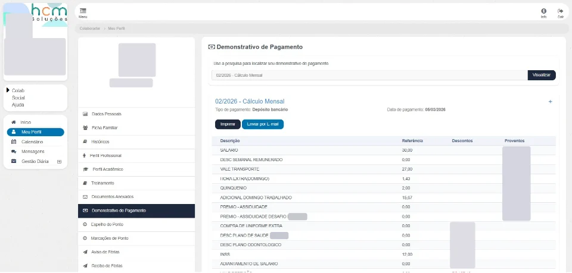
Aceite eletrônico do demonstrativo de pagamento com assinatura aplicada no PDF.
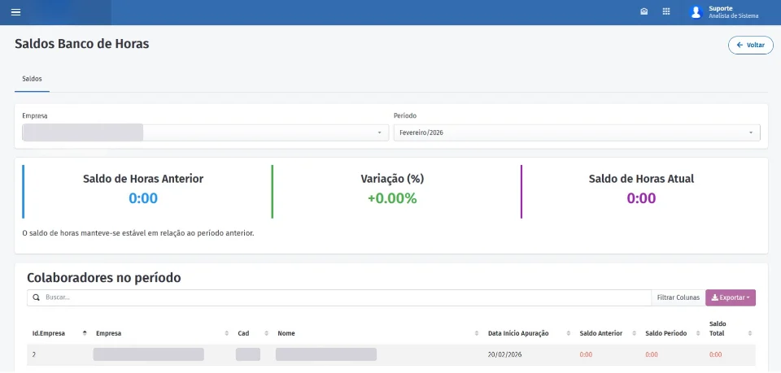
Consulta de saldos por empresa e período, com relatório montado sem recarregar a página.
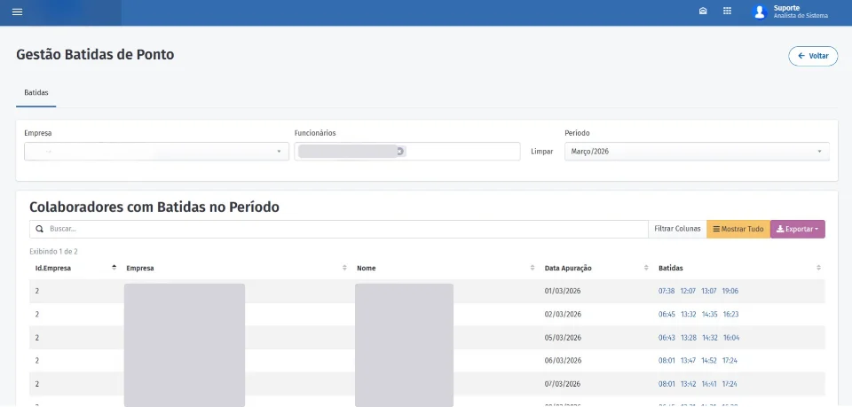
Auditoria de marcações com filtros em cascata e comprovante de registro do trabalhador.
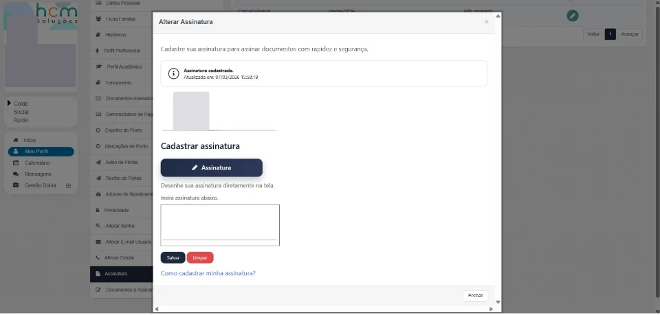
Assinatura desenhada na tela, validada no servidor e pronta para uso em documentos.
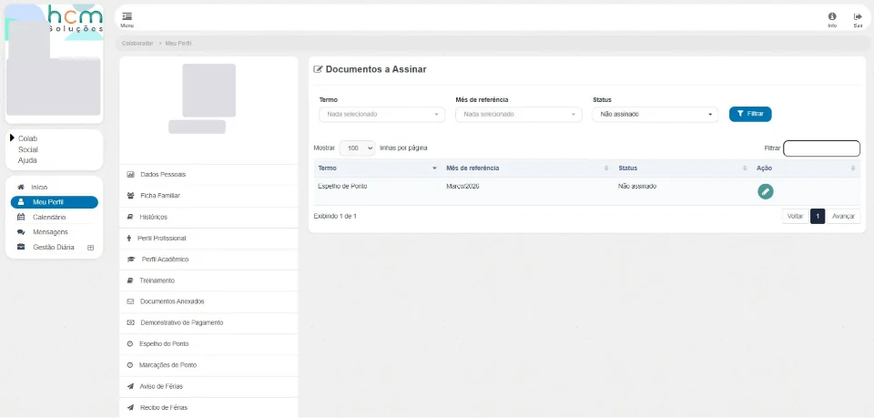
Central única de pendências com filtros por termo, mês e status.
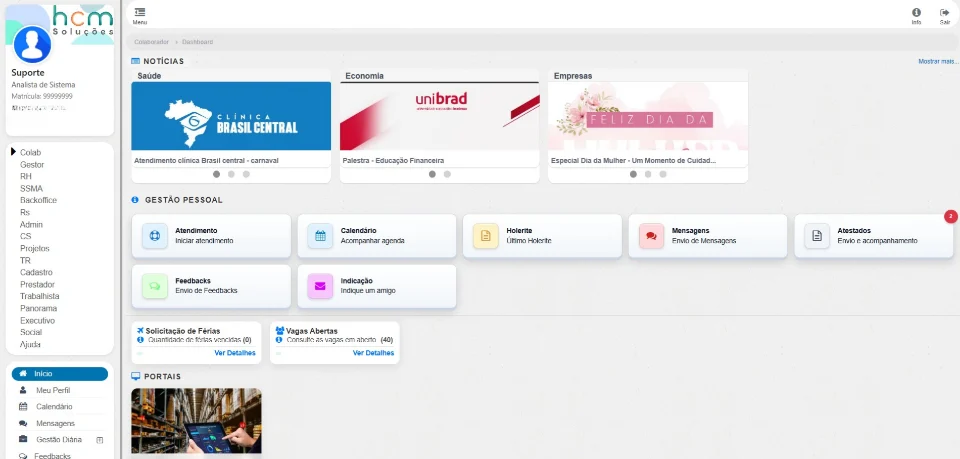
Redesign do dashboard principal com hierarquia visual clara e navegação mais simples.
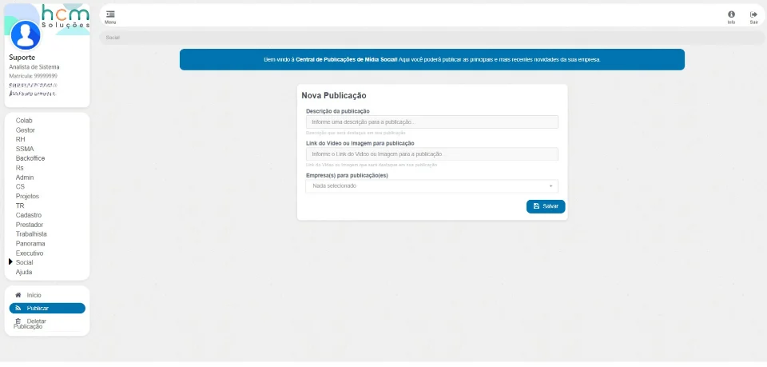
Mural corporativo com feed multimídia, publicação para várias empresas e notificações.
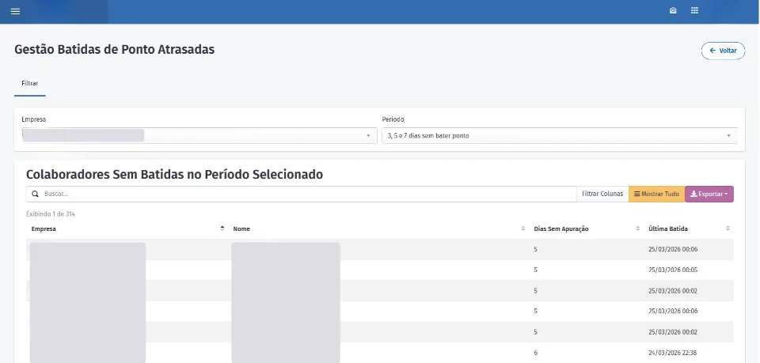
Triagem de colaboradores sem registro de ponto há 3, 5 ou 7 dias.
Nenhum projeto encontrado para essa busca.
Posso apresentar qualquer um desses módulos em uma conversa técnica — arquitetura, decisões e trade-offs.